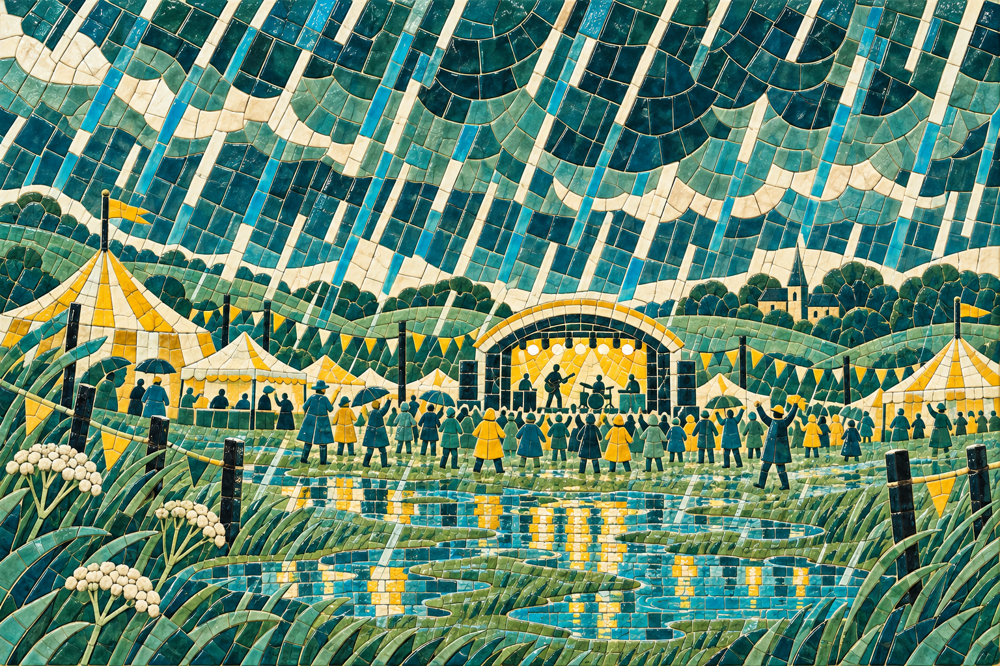
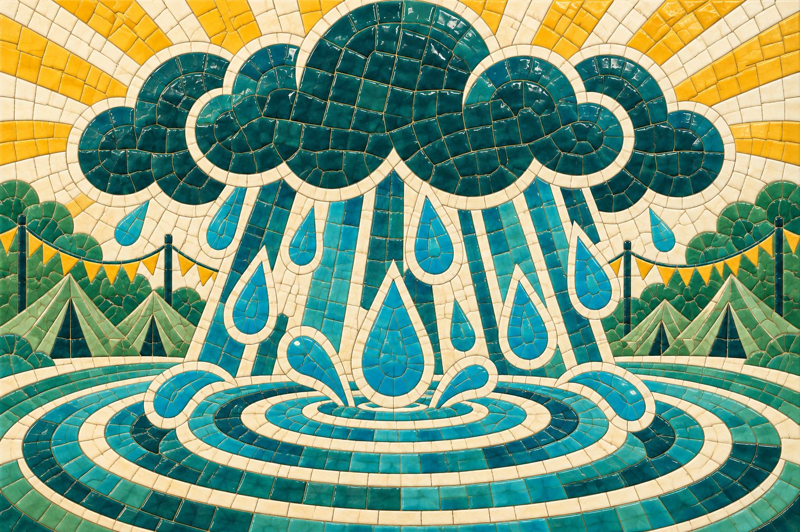
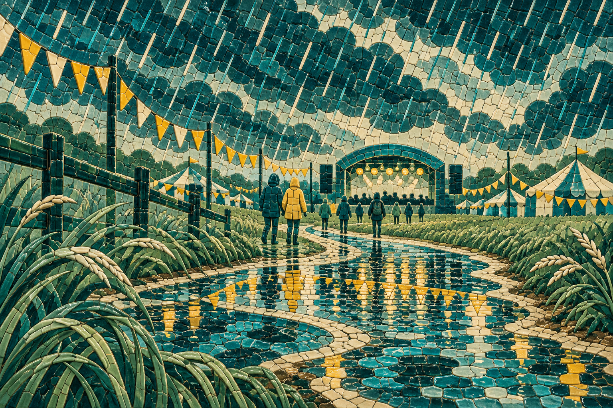

Six text-free masters • 1536 × 1024 • For selection, not approved
These panels load the original master PNGs without cropping or regeneration. Open any image for full resolution. Generated PNG comparison boards are illustrative; these originals are authoritative.



Crop guidance: retain full 3:2 when possible. Centered 16:9 keeps x=0–1536 and y=80–944 (864 px height); some decorative sun/cloud edges and foreground foliage trim. Avoid tighter crops until the selected composition is reviewed in the reveal layout.